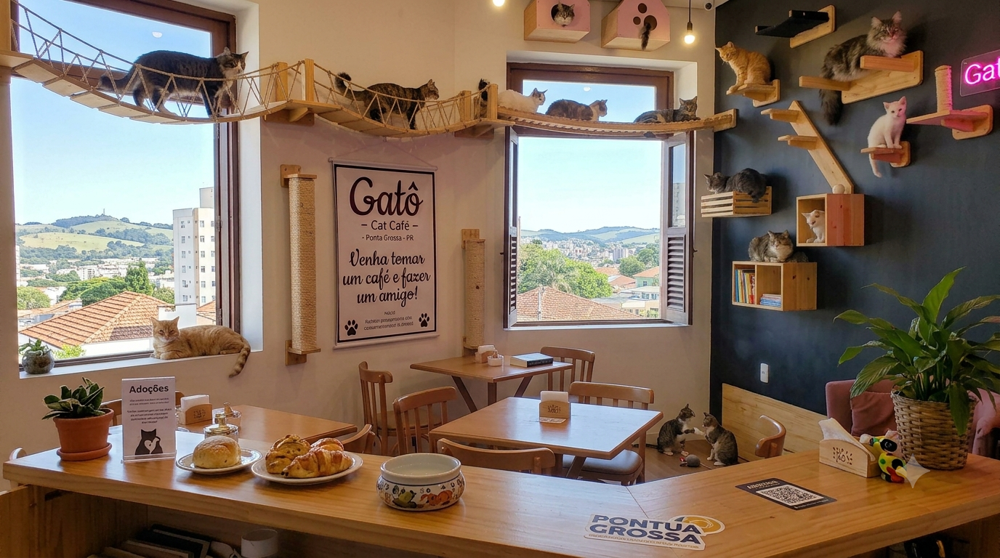

Cat Café
Cat Café é uma cafeteria temática onde os clientes podem consumir lanches e bebidas enquanto interagem livremente com gatos que vivem no local. Esse espaço funciona em parceria com ONGs para promover a adoção.
Season Coffee & Co - Cat Café
A cafeteria existe há um bom tempo e conta com um cardápio super interessante, com espaço aconchegante e criativo. Os produtos são artesanais e há opções veganas, destaque para a bebida “Casa dos Gatos”, um milkshake de morango decorado com gatos, em que parte do valor de R$ 20 é doado para a ong Casa dos Gatos;
SPACE CAT Coffee
Esse é o primeiro “cat café” do Sul do Brasil. Ambiente super moderno, com o tema sobre o “espaço”, com planetas e estrelasPara ter acesso ao gatos o valor é de R$10, que será revertido em ração, sendo que alguns dos animais são residentes e outros podem ser adotados.Vale aqui destacar o “Croque Madame”, uma receita bem popular e consumida na França, nos cafés e bistrôs.
